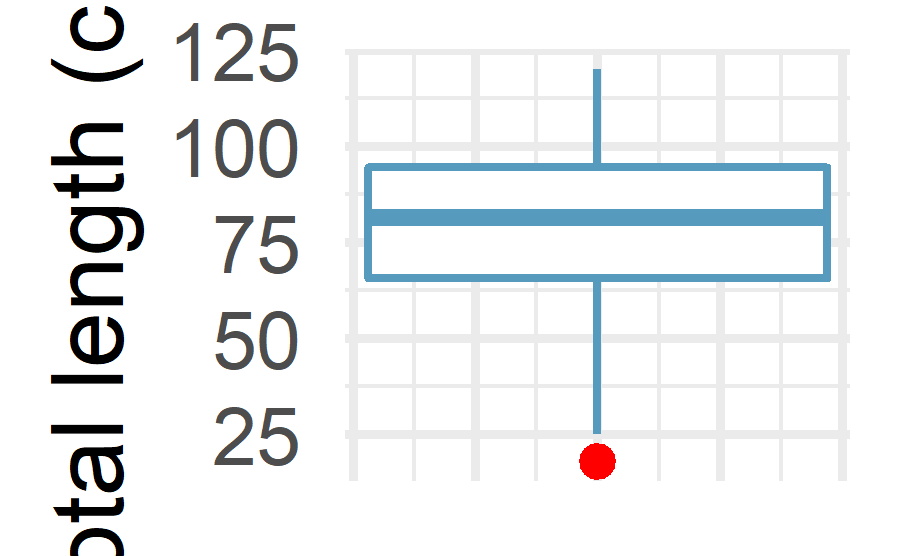

#> Rows: 112
#> Columns: 3
#> $ tl <dbl> 120.1, 115.0, 111.2, 110.2, 110.0, 109.7, 105.0, 100.1, 98.0, 92.1~
#> $ w <dbl> 17.9, 17.2, 16.8, 15.8, 14.3, 13.8, 12.8, 11.7, 12.8, 14.8, 9.7, 7~
#> $ loc <fct> Argentina, Argentina, Argentina, Argentina, Argentina, Argentina, ~8 Detect Outlier(s)
An outlier is a value or an observation that is distant from other observations, that is to say, a data point that differs significantly from other data points. Enderlein (1987) goes even further as the author considers outliers as values that deviate so much from other observations one might suppose a different underlying sampling mechanism.
An outlier may be due to the variability inherent in the observed phenomenon. For example, it is often the case that there are outliers when collecting data on salaries, as some people make much more money than the rest. Outliers can also arise due to an experimental, measurement or encoding error. For instance, a human weighting 786 kg (1733 pounds) is clearly an error when encoding the weight of the subject. Her or his weight is most probably 78.6 kg (173 pounds) or 7.86 kg (17 pounds) depending on whether weights of adults or babies have been measured.
For this reason, it sometimes makes sense to formally distinguish two classes of outliers: (i) extreme values and (ii) mistakes. Extreme values are statistically and philosophically more interesting, because they are possible but unlikely responses. (Thanks Felix Kluxen for the valuable suggestion.)
In this article, I present several approaches to detect outliers in R, from simple techniques such as descriptive statistics (including minimum, maximum, histogram, boxplot and percentiles) to more formal techniques such as the Hampel filter, the Grubbs, the Dixon and the Rosner tests for outliers.
Although there is no strict or unique rule whether outliers should be removed or not from the dataset before doing statistical analyses, it is quite common to, at least, remove or impute outliers that are due to an experimental or measurement error (like the weight of 786 kg (1733 pounds) for a human). Some statistical tests require the absence of outliers in order to draw sound conclusions, but removing outliers is not recommended in all cases and must be done with caution.
This chapter help us understand in detail whether we should remove outliers or not (nor if you should impute them with the median, mean, mode or any other value), but it will help you to detect them in order to, as a first step, verify them. After their verification, it is then your choice to exclude or include them for your analyses (and this usually requires a thoughtful reflection on the researcher’s side). Removing or keeping outliers mostly depend on three factors:
The domain/context of your analyses and the research question. In some domains, it is common to remove outliers as they often occur due to a malfunctioning process. In other fields, outliers are kept because they contain valuable information. It also happens that analyses are performed twice, once with and once without outliers to evaluate their impact on the conclusions. If results change drastically due to some influential values, this should caution the researcher to make overambitious claims.
Whether the tests you are going to apply are robust to the presence of outliers or not. For instance, the slope of a simple linear regression may significantly varies with just one outlier, whereas non-parametric tests such as the Wilcoxon test are usually robust to outliers.
How distant are the outliers from other observations? Some observations considered as outliers (according to the techniques presented below) are actually not really extreme compared to all other observations, while other potential outliers may be really distant from the rest of the observations.
The dataset mpg from the {ggplot2} package will be used to illustrate the different approaches of outliers detection in R, and in particular we will focus on the variable hwy (highway miles per gallon).
8.1 Data
The data we are going to use is chinookdataset, which found in FSA package. This dataset is a dataframe with 112 observations of lengths and weights for Chinook Salmon from three locations in Argentina.
8.2 Descriptive statistics
8.3 Minimum and maximum
The first step to detect outliers in R is to start with some descriptive statistics, and in particular with the minimum and maximum.
In R, this can easily be done with the summary() function:
#> Min. 1st Qu. Median Mean 3rd Qu. Max.
#> 18.0 65.6 81.6 78.9 94.7 120.1where the minimum and maximum are respectively the first and last values in the output above. Alternatively, they can also be computed with the min() and max(), or range() functions
| Name | Piped data |
| Number of rows | 112 |
| Number of columns | 3 |
| _______________________ | |
| Column type frequency: | |
| numeric | 1 |
| ________________________ | |
| Group variables | None |
Variable type: numeric
| skim_variable | n_missing | complete_rate | mean | sd | p0 | p25 | p50 | p75 | p100 | hist |
|---|---|---|---|---|---|---|---|---|---|---|
| tl | 0 | 1 | 78.9 | 21.9 | 18 | 65.6 | 81.6 | 94.7 | 120 | <U+2582><U+2582><U+2587><U+2587><U+2583> |
Boxlot is also helpuful to detect whether the dataset has outliers

A boxplot helps to visualize a quantitative variable by displaying five common location summary (minimum, median, first and third quartiles and maximum) and any observation that was classified as a suspected outlier using the interquartile range (IQR) criterion. The IQR criterion means that all observations above q0.75+1.5⋅IQRq0.75+1.5⋅IQR or below q0.25−1.5⋅IQRq0.25−1.5⋅IQR (where q0.25q0.25 and q0.75q0.75 correspond to first and third quartile respectively, and IQR is the difference between the third and first quartile) are considered as potential outliers by R. In other words, all observations outside of the following interval will be considered as potential outliers:
\(I=[q0.25−1.5⋅IQR;q0.75+1.5⋅IQR]I=[q0.25−1.5⋅IQR;q0.75+1.5⋅IQR]\)
Observations considered as potential outliers by the IQR criterion are displayed as points in the boxplot. Based on this criterion, there are 2 potential outliers (see the 2 points above the vertical line, at the top of the boxplot).
Remember that it is not because an observation is considered as a potential outlier by the IQR criterion that you should remove it. Removing or keeping an outlier depends on (i) the context of your analysis, (ii) whether the tests you are going to perform on the dataset are robust to outliers or not, and (iii) how far is the outlier from other observations.
It is also possible to extract the values of the potential outliers based on the IQR criterion thanks to the boxplot.stats()$out function:
#> [1] 188.4 Statistical tests
In this section, we present 3 more formal techniques to detect outliers:
Grubbs's test
Dixon's test
Rosner's test
These 3 statistical tests are part of more formal techniques of outliers detection as they all involve the computation of a test statistic that is compared to tabulated critical values (that are based on the sample size and the desired confidence level).
Note that the 3 tests are appropriate only when the data (without any outliers) are approximately normally distributed. The normality assumption must thus be verified before applying these tests for outliers (see how to test the normality assumption in R).
8.4.1 Grubbs's test
The Grubbs test allows to detect whether the highest or lowest value in a dataset is an outlier.
The Grubbs test detects one outlier at a time (highest or lowest value), so the null and alternative hypotheses are as follows:
H0H0: The highest value is not an outlier
H1H1: The highest value is an outlier
if we want to test the highest value, or:
H0H0: The lowest value is not an outlier
H1H1: The lowest value is an outlier
if we want to test the lowest value.
As for any statistical test, if the p-value is less than the chosen significance threshold (generally α=0.05α=0.05) then the null hypothesis is rejected and we will conclude that the lowest/highest value is an outlier. On the contrary, if the p-value is greater or equal than the significance level, the null hypothesis is not rejected, and we will conclude that, based on the data, we do not reject the hypothesis that the lowest/highest value is not an outlier.
Note that the Grubbs test is not appropriate for sample size of 6 or less (n≤6n≤6).
To perform the Grubbs test in R, we use the grubbs.test() function from the {outliers} package:
#>
#> Grubbs test for one outlier
#>
#> data: tl
#> G = 2.8, U = 0.9, p-value = 0.3
#> alternative hypothesis: lowest value 18 is an outlierThe p-value is 0.056. At the 5% significance level, we do not reject the hypothesis that the highest value 44 is not an outlier.
By default, the test is performed on the highest value (as shown in the R output: alternative hypothesis: highest value 44 is an outlier). If you want to do the test for the lowest value, simply add the argument opposite = TRUE in the grubbs.test() function:
#>
#> Grubbs test for one outlier
#>
#> data: tl
#> G = 2, U = 1, p-value = 1
#> alternative hypothesis: highest value 120.1 is an outlierThe R output indicates that the test is now performed on the lowest value (see alternative hypothesis: lowest value 12 is an outlier).
The p-value is 1. At the 5% significance level, we do not reject the hypothesis that the lowest value 12 is not an outlier.
8.5 Dixon's test
Similar to the Grubbs test, Dixon test is used to test whether a single low or high value is an outlier. So if more than one outliers is suspected, the test has to be performed on these suspected outliers individually.
Note that Dixon test is most useful for small sample size (usually n≤25n≤25).
To perform the Dixon's test in R, we use the dixon.test() function from the {outliers} package. However, we restrict our dataset to the 20 first observations as the Dixon test can only be done on small sample size (R will throw an error and accepts only dataset of 3 to 30 observations):
The results show that the lowest value 15 is an outlier (p-value = 0.007).
To test for the highest value, simply add the opposite = TRUE argument to the dixon.test() function:
The results show that the highest value 31 is not an outlier (p-value = 0.858).
8.6 Rosner's test
Rosner's test for outliers has the advantages that:
it is used to detect several outliers at once (unlike Grubbs and Dixon test which must be performed iteratively to screen for multiple outliers), and
it is designed to avoid the problem of masking, where an outlier that is close in value to another outlier can go undetected.
Unlike Dixon test, note that Rosner test is most appropriate when the sample size is large (n≥20n≥20). We therefore use again the initial dataset dat, which includes 234 observations.
To perform the Rosner test we use the rosnerTest() function from the {EnvStats} package. This function requires at least 2 arguments: the data and the number of suspected outliers k (with k = 3 as the default number of suspected outliers).
For this example, we set the number of suspected outliers to be equal to 3, as suggested by the number of potential outliers outlined in the boxplot at the beginning of the article.
#> $distribution
#> [1] "Normal"
#>
#> $statistic
#> R.1 R.2 R.3
#> 2.78 2.56 2.45
#>
#> $sample.size
#> [1] 112
#>
#> $parameters
#> k
#> 3
#>
#> $alpha
#> [1] 0.05
#>
#> $crit.value
#> lambda.1 lambda.2 lambda.3
#> 3.42 3.42 3.42
#>
#> $n.outliers
#> [1] 0
#>
#> $alternative
#> [1] "Up to 3 observations are not\n from the same Distribution."
#>
#> $method
#> [1] "Rosner's Test for Outliers"
#>
#> $data
#> [1] 120.1 115.0 111.2 110.2 110.0 109.7 105.0 100.1 98.0 92.1 99.0 97.9
#> [13] 94.9 92.2 94.9 92.7 92.9 89.9 88.7 92.0 87.7 85.1 85.1 82.9
#> [25] 82.9 83.8 82.2 81.0 78.8 78.8 74.9 68.1 66.8 59.9 113.8 112.9
#> [37] 108.1 109.7 103.7 103.2 99.9 99.0 103.0 103.0 99.4 97.9 97.2 96.7
#> [49] 95.1 92.2 93.0 92.2 91.2 88.1 94.6 94.3 92.5 88.1 89.8 88.8
#> [61] 87.9 86.0 87.4 68.5 80.5 79.0 77.6 72.8 77.3 78.8 74.5 72.6
#> [73] 73.3 74.0 75.2 76.6 72.0 70.6 71.8 70.2 68.2 67.3 67.7 65.9
#> [85] 66.3 64.7 63.0 62.7 64.2 61.3 64.2 60.1 59.4 57.7 57.4 56.5
#> [97] 54.1 54.1 56.0 52.0 50.8 49.3 43.8 39.8 39.0 35.4 36.9 32.1
#> [109] 31.9 29.2 25.2 18.0
#>
#> $data.name
#> [1] "tl"
#>
#> $bad.obs
#> [1] 0
#>
#> $all.stats
#> i Mean.i SD.i Value Obs.Num R.i+1 lambda.i+1 Outlier
#> 1 0 78.9 21.9 18.0 112 2.78 3.42 FALSE
#> 2 1 79.4 21.2 25.2 111 2.56 3.42 FALSE
#> 3 2 79.9 20.7 29.2 110 2.45 3.42 FALSE
#>
#> attr(,"class")
#> [1] "gofOutlier"Based on the Rosner test, we see that there is only one outlier (see the Outlier column), and that it is the observation 34 (see Obs.Num) with a value of 212 (see Value).